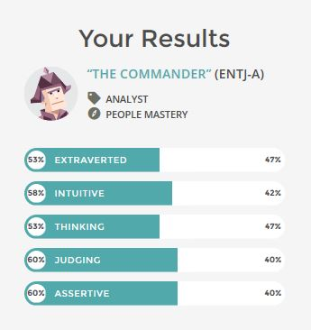
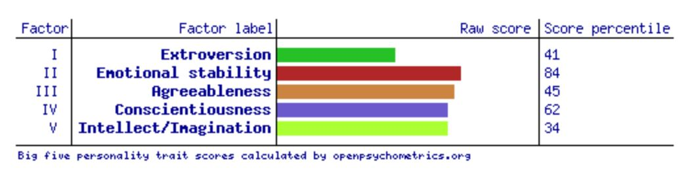
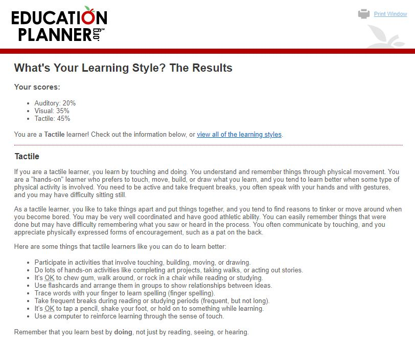

Personal Profile
The Myers-Briggs

Big 5 Personality Test

Leaning Style Test

Related questions from the tests
Honestly my belief in these kinds of tests is limited, though I understand they are
sometimes
used in job interviews so being familiar could make things go smoother.
I have actually been denied a job for failing a personality test before despite already subcontracting to the company for 6 months and having a good working relationship with the employees. Upper management said the rules were not flexible so I had to move on, though I’ve worked at my current similar job for around 10 years with no issues making me wonder what the tests showed.
That’s not to say I don’t think they have any value, but only as a starting point or rough guide. Of course I must be ready to still deal with them for companies that use them.
• What do the results of these tests mean for you?
Most the results are roughly what I expected to see. The Myers test showed “The Commander” but to me it seems to be very middle of the road likely showing that I don’t fit into the role very well. For example, I am known to lead but also more than happy to follow someone who knows what they are doing. Very situation dependent.
The Learning style with the focus on Tactile, then Visual and finally Auditory is just what I expected as I do tend to be more interested when actively participating. I actually believe this kind of test can be more useful than the others and I’ve been learning more about my learning style lately.
Last the Big Five personality test shows a rough idea of what I expected but fails to go into detail. For example in a social situation where I share a common interest with people I may be very loud and out going. In a work environment I’m more likely to avoid social interaction beyond what is required for the job and to be polite.
• How do you think these results may influence your behavior in a team?
I honestly don’t think it will but to play along. To start the Myers-Briggs Test show I would fit into the role of group leader but not to such an extreme level that I couldn’t fill another position if required. I would also do well to assist with organisation of roles and the best way to arrange tasks. The Learning Style test shows I would be best remaining on the more active side of preparing all the work and presentations to assist all the information sticking in my memory long term, the more I have to put it to practical use the better. Last the Big Five test again shows that I’m a middle of the road person in many areas but should watch out for withdrawing from the group too much.
• How should you take this into account when forming a team?
I believe the results show I am rather flexible from all the tests so I would do best trying to fill in any missing areas from other team members. For maximising the learning side though I am keen to take more of a role in the creation and implication of any of the ideas developed and researched, so should try to find a group lacking too many with similar ambitions. For this courses project I’m looking forward to assisting heavily in developing the video presentation. Last I should use my calm and agreeable personality to try and assist with any tensions that my group may develop and this could help me form a team that otherwise would have trouble getting along.
I have actually been denied a job for failing a personality test before despite already subcontracting to the company for 6 months and having a good working relationship with the employees. Upper management said the rules were not flexible so I had to move on, though I’ve worked at my current similar job for around 10 years with no issues making me wonder what the tests showed.
That’s not to say I don’t think they have any value, but only as a starting point or rough guide. Of course I must be ready to still deal with them for companies that use them.
• What do the results of these tests mean for you?
Most the results are roughly what I expected to see. The Myers test showed “The Commander” but to me it seems to be very middle of the road likely showing that I don’t fit into the role very well. For example, I am known to lead but also more than happy to follow someone who knows what they are doing. Very situation dependent.
The Learning style with the focus on Tactile, then Visual and finally Auditory is just what I expected as I do tend to be more interested when actively participating. I actually believe this kind of test can be more useful than the others and I’ve been learning more about my learning style lately.
Last the Big Five personality test shows a rough idea of what I expected but fails to go into detail. For example in a social situation where I share a common interest with people I may be very loud and out going. In a work environment I’m more likely to avoid social interaction beyond what is required for the job and to be polite.
• How do you think these results may influence your behavior in a team?
I honestly don’t think it will but to play along. To start the Myers-Briggs Test show I would fit into the role of group leader but not to such an extreme level that I couldn’t fill another position if required. I would also do well to assist with organisation of roles and the best way to arrange tasks. The Learning Style test shows I would be best remaining on the more active side of preparing all the work and presentations to assist all the information sticking in my memory long term, the more I have to put it to practical use the better. Last the Big Five test again shows that I’m a middle of the road person in many areas but should watch out for withdrawing from the group too much.
• How should you take this into account when forming a team?
I believe the results show I am rather flexible from all the tests so I would do best trying to fill in any missing areas from other team members. For maximising the learning side though I am keen to take more of a role in the creation and implication of any of the ideas developed and researched, so should try to find a group lacking too many with similar ambitions. For this courses project I’m looking forward to assisting heavily in developing the video presentation. Last I should use my calm and agreeable personality to try and assist with any tensions that my group may develop and this could help me form a team that otherwise would have trouble getting along.
© Timothy Forde. All rights reserved.
Design by TEMPLATED.
Adapted by Timothy Forde under a free Creative Commons Public Licence.